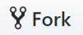

Słowem wstępu
Na szkolenie będą składały się następujące elementy:
- Dokument tekstowy zawierający
- materiały o charakterze informacyjnym (np. instrukcja konfiguracji stacji roboczej)
- odnośniki do materiałów zewnętrznych (np. tutorial internetowy)
- treści zadań do realizacji/odnośniki do repozytoriów git zawierających materiały
- Konsultacje
- w formie tekstowej (indywidualne i grupowe) przy pomocy komunikatora Discord, głównie w godzinach wieczornych.
- "osobiste" w godzinach pracy, preferowanie przed spotkaniami projektowymi umawiane ad hoc
- Spotkanie grupowe
- około 2h raz na 2 tygodnie
- termin będzie ustalany podczas poprzedniego spotkania za wyjątkiem pierwszego, którego termin zostanie podany na Discord.
Podczas szkolenia wielokrotnie będzie przewijał się tekst "NSq1" (często w towarzystwie obrazka wiewiórki). Jest to nazwa mojego konta użytkownika i w większości przykładowych komend/wycinkach ekranu powinien on być zastąpiony przez prywatną nazwę kont utworzonych w paragrafie 2.
Założenie kont oraz instalacja wymaganych aplikacji
-
Discord (+ konto)
- Klikamy/otwieramy link na wybranym urządzeniu: skontaktuj się ze mną
- Instalujemy oprogramowanie dla urządzenia/używamy wewnątrz przeglądarki.
- Zakładamy konto/logujemy się i witamy z resztą na grupie eb-java
-
GitHub
Założyć konto i następnie umieścić jego nazwę lub adres email na który zostało założone na kanale discord „start”. Przed rozpoczęciem zadania drugiego będę musiał dodać wskazane konto do grupy na GitHub.
-
Java SDK + JRE 1.8
Java SE Development Kit 8 Downloads
 Akceptujemy licencje i pobieramy odpowiednią javę (preferujemy x64 jeśli mamy windows 64 bitowy). Instalator po zainstalowaniu SDK powinien zaproponować instalację JRE, na którą również wyrażamy zgodę.
Akceptujemy licencje i pobieramy odpowiednią javę (preferujemy x64 jeśli mamy windows 64 bitowy). Instalator po zainstalowaniu SDK powinien zaproponować instalację JRE, na którą również wyrażamy zgodę. -
Eclipse
Pobieramy oraz instalujemy Eclipse IDE for Enterprise Java Developers
-
Git
Pobieramy oraz instalujemy Git: Download for Windows
Po instalacji proponuję od razu uruchomić
 oraz wykonać 2 komendy (albo git sam się o nie upomni gdy będzie ich potrzebował).
oraz wykonać 2 komendy (albo git sam się o nie upomni gdy będzie ich potrzebował).git config --global user.email "twoj@email.tutaj"
git config --global user.name "Twoja nazwa konta"
-
Opcjonalnie: Google translate w Chrome
Większość materiałów dodatkowych (stron WWW) będzie anglojęzyczna, współpracę może ułatwić wtyczka do chrome umożliwiająca szybkie przetłumaczenie fragmentu/strony. Proszę jedynie mieć na uwadze, że strony mogą (i pewnie często będą) zawierać kod/komendy w postaci tekstu, a nie obrazka i one również zostaną przetłumaczone razem z resztą strony i w związku z tym będą błędne.
google-translate
Po instalacji klikamy prawym na wtyczkę, wybieramy opcje i zmieniamy język tłumaczenia na Polski. -
Hello World
-
Pierwsze kroki
Proszę o zapoznanie się/realizację ćwiczenia:
-
Uruchamiamy Eclipse
Odszukujemy i uruchamiamy

 Eclipse poprosi nas o wyznaczenie przestrzeni roboczej na rozwijane projekty.
Eclipse poprosi nas o wyznaczenie przestrzeni roboczej na rozwijane projekty.
Mogą być to nawet "moje dokumeny", ale radzę stworzyć podkatalog związanych tylko i wyłącznie z naszym szkoleniem. U mnie wygląda to następująco: Eclipse przywita nas powitalną zakładką "Welcome", którą możemy od razu zamknąć. Eclipse powinien wyglądać w następujący sposób.
Eclipse przywita nas powitalną zakładką "Welcome", którą możemy od razu zamknąć. Eclipse powinien wyglądać w następujący sposób.Używam ciemnego motywu kolorów w Eclipse, z takiego będę również zamieszczał wycinki ekranu. Jeśli ktoś obawia się, że inna wersja 'kolorów' może mu utrudnić przyswojenie szkolenia, proponuję zmianę na identyczny z moim.
 W tym celu wchodzimy w opcje: Window>Preferences, w nowo otwartym oknie filtrujemy opcje słowem "theme" a następny w sekcji General/Appearance wybieramy Theme: Dark i akceptujemy zmiany
W tym celu wchodzimy w opcje: Window>Preferences, w nowo otwartym oknie filtrujemy opcje słowem "theme" a następny w sekcji General/Appearance wybieramy Theme: Dark i akceptujemy zmiany Eclipse powinien wyglądać następująco
Eclipse powinien wyglądać następująco -
Uruchamiamy Git Bash
Odszukujemy i uruchamiamy
Następnie przy pomocy komendy ‘cd’ przechodzimy do katalogu, który wybraliśmy jako workspace dla Eclipse. U mnie jest to:
$ cd /c/Users/micha/OneDrive/eclipse-workspace/ -
Ściągamy projekt Hello World
Wchodzimy na eb-java/hello-world a następnie w prawym górnym rogu wybieramy opcję .
Wybieramy stworzenie projektu w przestrzeni naszego użytkownika.

Po chwili powinniśmy zobaczyć stronę podobną do tej:

Klikamy na i kopiujemy ten link do konsoli git bash poprzedzając go tekstem "git clone ".
Komenda git i jej efekt powinien wyglądać podobnie do:

-
Importujemy i uruchamiamy projekt
Wracamy do Eclipse, wybieramy opcję File>Import.
Wybieramy Maven>Existing Maven Project.
Odszukujemy projekt na dysku, ja robię to przez wybranie w Root Directory mojego workspace. A potem zaznaczenie wybranych projektów do zaimportowania checkboxem.

Następnie klikamy Finish. Po zaimportowaniu projekt "hello-world" powinien pojawić się w sekcji "Project Explorer".

Otwieramy klasę HelloWorld a następnie uruchamiamy przez kliknięcie na górnym pasku run
 run
runW sekcji sekcji "Console" powinniśmy zobaczyć napis "Hello World!" jak obok

-
-
Podstawowe elementy programowania
Typy danych
Operacje
Instrukcje warunkowe
Tablice i kolekcje
- Tablice
- Kolekcje zostaną omówione później
Pętle
- Inkrementaja/dekremantacja
- For
- Foreach
- Dla ambitnych na tej samej stronie [while] oraz [do while].
- Sekcje [Polecenia break i continue] oraz [Nieskończona pętla] są praktycznie nieużywane i można je traktować jako ciekawostki.
Zadanie do realizacji
Zmodyfikować program Hello World tak aby po powitaniu wydrukować tekst piosenki „99 Bottles of beer” (https://pl.wikipedia.org/wiki/99_Bottles_of_Beer).
Efektem uruchomienia programu powinno być wydrukowanie tekstu:
Następnie wykonać w katalogu projektu komendy git:
$ git commit -am '99 Bottles of beer' $ git push
Po zakończeniu proszę poinformować o zrealizowaniu zadania na kanale discord #99BottlesOfBeer
Zadanie dodatkowe
Zmodyfikuj zadanie 4.6 tak aby:
- oprzeć się na tablicy
- na ścianie początkowo znajduje się 100 piw
- ze ściany ściągamy i przekazujemy na raz 4 piwa.
Efektem uruchomienia programu powinno być wydrukowanie tekstu:
Następnie wykonać w katalogu projektu komendy git:
$ git commit -am 'Array of the bottles of beer – 4 down' $ git push
Po zakończeniu proszę poinformować o zrealizowaniu zadania dodatkowego na kanale discord #99BottlesOfBeer
{kind=link}
{kind=link}